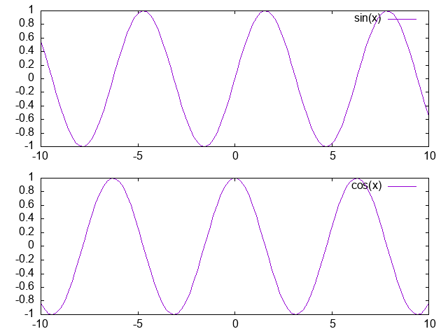
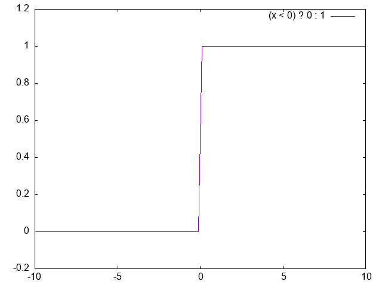

Appendix
Appendix 1 複数のグラフを描写する（set multiplot）
一度に複数のグラフを描写する場合にはset multiplotコマンドを使います。
このコマンドによりgnuplotはmultiplotのモードに入ります。例えば
1 2 3 4 5 6 | |
set originコマンドはグラフの左下の位置を決め、
set sizeコマンドはグラフの縦横のサイズを変更します。

multiplotモードを終了させるには
1 | |
Appendix 2： アニメーション
【以下の内容は過去の資料にあったものですが、やり方が下手すぎます。最近のgnuplotではfor文が使えるので、アニメーションを作りたい人はfor文を使ったやり方を検索するとよいと思います。】
コマンドファイルをうまく使うと、アニメーションを作ってやることができます。
まず、以下のようなファイルを作り、anim.pltなどの名前で保存しておきます。
（pause -1→i=i+0.5→repの部分は、コピペ等で好きな数だけ繰り返してください）
1 2 3 4 5 6 7 8 9 10 11 | |
これをloadすると、リターンを押すごとに画像が動いて見えるはずです。
pauseコマンドはpause 秒数でその秒数だけ停止する、というコマンドです。
秒数を-1にしたときにはリターンが押されるまでその状態で停止します。
この技は、微分方程式の時間発展の結果のデータファイルを順番に読み込ませて時間発展の雰囲気を掴んだりする時に有用です。
Appendix 3： 関数の利用（f(x)）
数式中の変数の値を少し変えただけの複数のグラフを描画したいとき、複雑な数式だと入力する作業が面倒なだけでなく、入力ミスから全然違うグラフを描画してしまうということがおきやすくなります。 そんな時に便利なのが関数定義という機能です。 これは数学関数の\(\sin,\cos\)などのように、gnuplot中で使える一般的な関数\(f(x)\)を自分で定義することができるというものです。
例えば次のような関数を表示したいとき $$ y = a\sin(x)\cos(x) \quad (a=1,2) $$
1 2 3 | |
Appendix 4： 三項演算子
例えばHeaviside関数（階段関数）のようにxの値によって関数の定義が変わってしまうようなグラフを描画するときに三項演算子というものを利用すると、簡単に描くことができます。
三項演算子は次のような書き方をします。
1 | |
1 2 | |

Appendix 5： 媒介変数の利用（set parametric）
これまで紹介したものはすべて \(y=f(x)\) や \(z=f(x,y)\) と表せるものでした。 しかしこれだけでは表現できないものもあります。 そんなとき、gnuplotでは媒介変数を利用することもできます。
1 | |
円を描く
1 2 | |
球を描く
1 2 | |
Appendix 6： gnuplot上でのshellコマンドの利用（shell, !）
gnuplotから一時的にshellに抜けることができます。そのためには、
1 | |
exitでshellを終了してgnuplotのプロンプトに戻ってきます。
1行だけのshellコマンドなら、! commandのようしてgnuplot内から実行することもできます。
例えば
1 | |
また、pwdとcdはgnuplotのコマンドラインからも実行できます（cdは!をつけると使えません）。
以下の例のように、ディレクトリ名は必ず引用符で括る必要があることに注意してください。
1 | |
Appendix 7： 最小二乗フィッティング
gnuplotの強力な機能の一つとして関数のフィッティング（当てはめ）があります。 パラメータを含んだ関数を用意すると、データファイルの数値に対して適当なパラメータの数値を自動的に検索してくれます。 関数は線形、非線形を問いません。
例として、あるデータファイル'linear.dat'を直線にフィッティングすることを考えます。
まず、パラメータを含む関数\(f(x)\)を定義します。
関数フィッティングにはfitコマンドを使います。
オプションとして検索したいパラメータ名を、viaに続けて与えます。
1 2 3 4 | |
収束しない場合は、大雑把に検討をつけた初期値を手で与えてやれば上手くいく場合が多いです。
例えば、関数 \(f(x)\)を定義したあとに\(a = -3\)などとして初期値を与えてからfitします。
Appendix 8： 画像の処理について
gv
gv はターミナル上で、
1 | |
Image Magick
Image Magickはps, eps, jpg, png, gifなど多くの形式に対応した画像処理ソフトです。
主にdisplayというコマンドとconvertというコマンドを使います。
displayはターミナル上で、
1 | |
convertは画像処理のためのコマンドです。
ターミナル上で、
1 | |
他にも
1 | |
1 | |
gimp
gimpはターミナル上で、
1 | |
Appendix 9： エラーバーを付ける
観測値や実験値をグラフにする場合の多くは、そこにエラーバーを表示する必要があります。
このような場合にはerrorbarsというスタイルを指定します。
1 | |
1 | |
データファイルには、3列または4列のデータが必要です。
データが3列の場合にはそれぞれの行は \((x,y,\Delta y)\) の組として解釈され、
\((x,y\)-\(\Delta y)\) から \((x,y\)+\(\Delta y)\) までの線が引かれます。
データが4列の場合には、それそれの列は \((x,y,y_{low},y_{high})\) として解釈され、
\((x,y_{low})\) から \((x,y_{high})\) までの線が引かれます。
複数列のデータの中から使用する列を指定する場合には、次のようにusingを使います。
1 | |